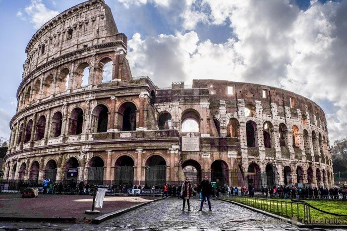

Ubicada entre los Apeninos y el bellísimo Mar Tirreno, más precisamente a orillas del río Tíber, se encuentra emplazada la llamada “Ciudad Eterna“. En otros tiempos centros administrativo del poderoso Imperio Romano, Roma se levanta sobre varias colinas y su nombre se relaciona a la historia de Rómulo y Remo. Actualmente la ciudad es el asentamiento del gobierno italiano y de la mayoría de sus ministerios.
La ciudad de Roma es la capital de Italia y cuenta con una una población de más de 3.000.000 de habitantes y más de 4.000.000 en su área metropolitana. Esta ciudad cuenta con una fuerte personalidad y una historia de miles de años que se respira en cada esquina. Sus ruinas recuerdan la época de oro de la ciudad y se encuentran en lo que se conoce como la Roma Antica y donde se pueden apreciar en toda su magnitud el monumental Coliseo y el Foro Romano.
El centro histórico de Roma alberga los edificios de la época del Renacimiento, emplazados sobre calles estrechas y adoquinadas que conducen a magníficas piazzas rodeadas de iglesias barrocas, enormes y lujosos palacios y fuentes maravillosas. Algunas de las mejores plazas para recorrer son la famosa Piazza Navona con su Fuente de los Cuatro Ríos de Bernini, la Piazza di Spagna con su conocida escalinata y la bellísima Fontana di Trevi.
La Fontana di Trevi.
Después de unos cuantos años en los que únicamente se podía ver entre andamios por las obras de restauración, a día de hoy podemos decir que la Fontana di Trevi luce ahora en su máximo esplendor. Dicen de ella que es la fuente más bonita del mundo y aunque nosotros no confirmaremos ni negaremos, lo que sí tenemos claro es que uno de los lugares que visitar en Roma imprescindibles.
A pesar de que normalmente siempre a rebosar de turistas, si vas a primera hora de la mañana o a altas horas de la noche, podrás sacar buenas fotos y disfrutarla con más tranquilidad, aunque también debemos considerar que verla rodeada de gente forma también parte de su atractivo. Por cierto, no olvides de tirar una moneda si quieres volver a Roma.
Una buena opción para disfrutar de Roma de noche es reservar este tour con guía en español que pasa por los edificios y plazas, como La Fontana di Trevi, mejor iluminados de la ciudad.

El Coliseo.
El Coliseo de Roma es el monumento más espectacular y conocido de la ciudad y uno de los más visitados del mundo. Ver y entrar en este increíble lugar es retroceder 2000 años, a una de las épocas de máxima esplendor del Imperio Romano. Antaño servía como distracción al pueblo de Roma, antiguamente se llamaba Anfiteatro Flavio y se realizaban todo tipo de peleas de gladiadores, ejecuciones…y a día de hoy es una de las atracciones turísticas más visitadas y que como no podía ser de otra forma, no puedes perderte en Roma.
Para visitarlo debes tener en cuenta las grandes colas que se forman en la entrada, sobre todo los fines de semana o días festivos. Una buena opción para no perder tiempo es reservar la visita guiada por el Coliseo, Foro y Palatino o esta oferta que incluye el Vaticano, las dos con guía en español con la que podrás saltarte las colas además de conocer de primera mano la historia y multitud de curiosidades.
Una buena opción si vas a visitar sus principales monumentos y edificios es reservar la OMMIA Vatican y la Roma Card, ahorraréis tiempo y dinero.
El Coliseo abre todos los días a las 8:30 de la mañana y la hora del cierre es a las 16:30 en invierno y a las 19:30 en verano. Más información en este artículo del Coliseo Romano, entradas sin colas y visita guiada.